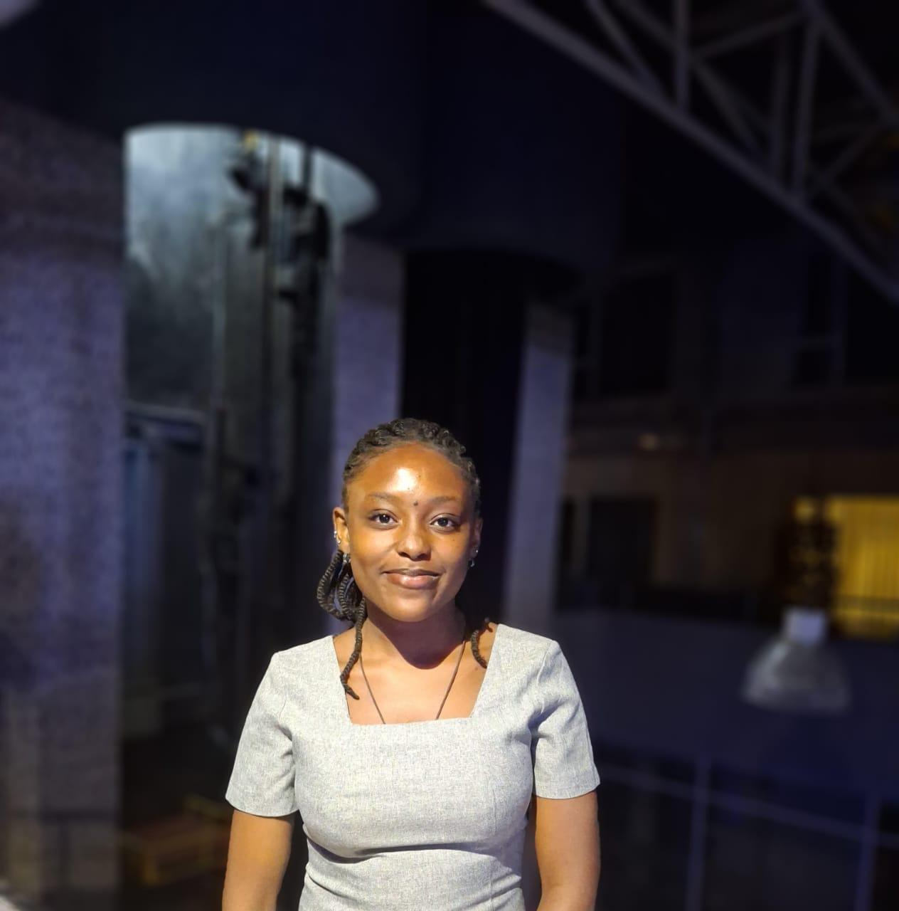

Susan Maina
Kenya Chapter Logistics Director
Susan Maina is a medical student at Uzima University, Kisumu (Kenya). She is a champion of public health. She is an SRHR enthusiast and has participated in various events to spread awareness on the same in collaboration with the various Standing Committees (SCORA, SCOPH).